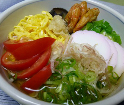

祭りそうめん
- 調理時間：30 分
- （一人当たり）
- カロリー：283kcal
- たんぱく質：11.6g
- 脂質：3.0g
- 塩分：4.4g

＜４人分＞
- そうめん
- ２００ｇ
- 麺つゆ
- ・だし汁
- ５００ｍｌ
- ・醤油
- 大さじ３
- ・みりん
- 大さじ３
- ・塩
- 少々
- かまぼこ
- ５０ｇ
- 干し椎茸の煮物
- ３～４枚分
- 錦糸卵
- １００ｇ
- オクラ
- ２本
- トマト
- １個
- 青ネギ
- ３～４本
- 生姜
- 少々
- ミョウガ
- ２個

-
具の準備をする。
・もどした干し椎茸はみりんと醤油（分量外）で煮て、細切りにする。
・錦糸卵をつくる。
・かまぼこは食べやすく細切りにする。
・オクラは熱湯でサッと湯がき、小口切りにする。
・トマトはクシ切り、ミョウガと青ネギは小口切り、ショウガはすりおろす。 -
めんつゆをつくる。
・鍋に分量の出し汁、醤油、みりん、塩を入れて一度に立てたら火を消し、あら熱をとって冷蔵庫で冷やす。 - 鍋にたっぷりの水をいれて沸かし、そうめんをゆでる。
- 茹で上がったら、しっかりもみ洗いをしてから水を切る。
- 器にそうめん、具を盛り付け、食べる直前にめんつゆをかける。
祭りそうめん
最近はラーメン、つけめん、パスタなど、いろいろな麺類が楽しめますが、日本の夏の風物詩といえばやはり、そうめんが外せません。
この季節に食べたくなる冷たい麺料理は、暑さで食欲がないときにも手が伸びる夏の強い味方です。だたし、そうめんだけで食べてしまっては、多少、栄養バランスに偏りが出てしまいます。
一杯でも、栄養満点になるような、具だくさんそうめんがオススメです。イメージは一汁三菜。主菜になるおかず、副菜になるおかず、小鉢になるおかずをイメージして、具を選びましょう。薬味野菜もたっぷりそえれば夏バテ予防の一品が完成です。